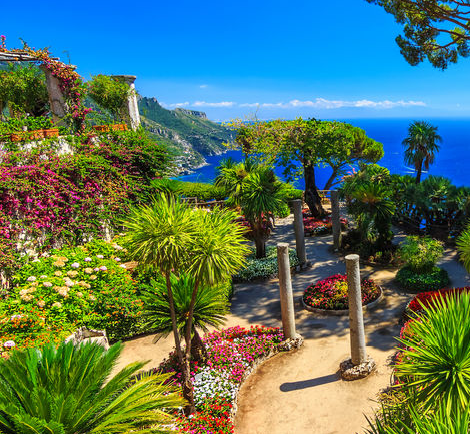

Wir lagen vor Anker und wurden mit dem Boot nach Positano übergesetzt.
In einem berauschenden Farbmix, bei dem Zitronenbäumchen für gelbe Punkte sorgen, zieht sich Positano fast vertikal den Berg hinauf. Eine malerische Versammlung von Balkonen und Arkaden, steilen Straßen und engen Gassen – ein wahrer Bilderbuch-Ort.
Bei einem eisgekühlten Limoncello in der sanften Abendsonne in Positano sitzend - was könnte Schöner sein?
Es war wundervoll diesen idylischen Klippen-Ort an der Amalfiküste zu Fuß zu erkunden.
Romantic Fußweg und Zier-
garten mit bunten Blumen